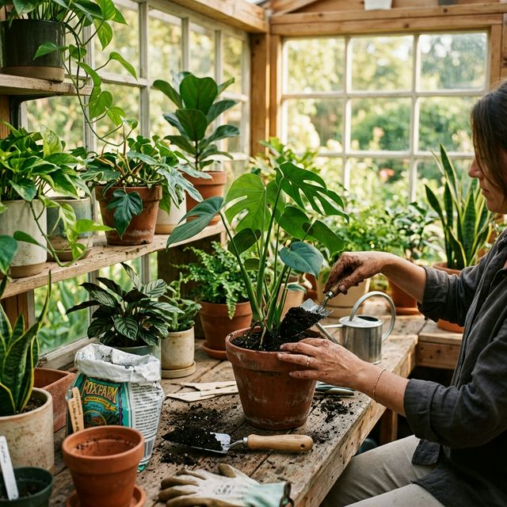
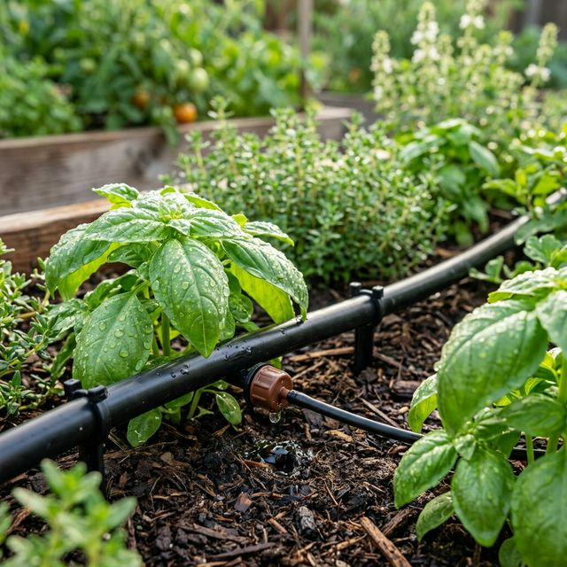
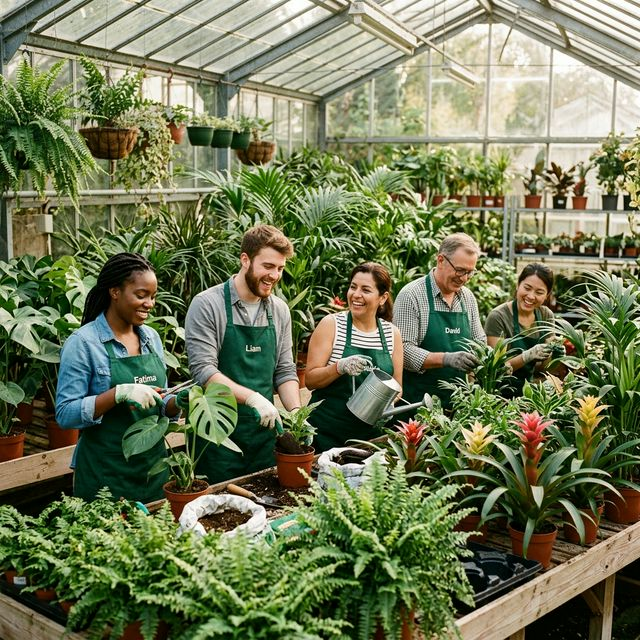
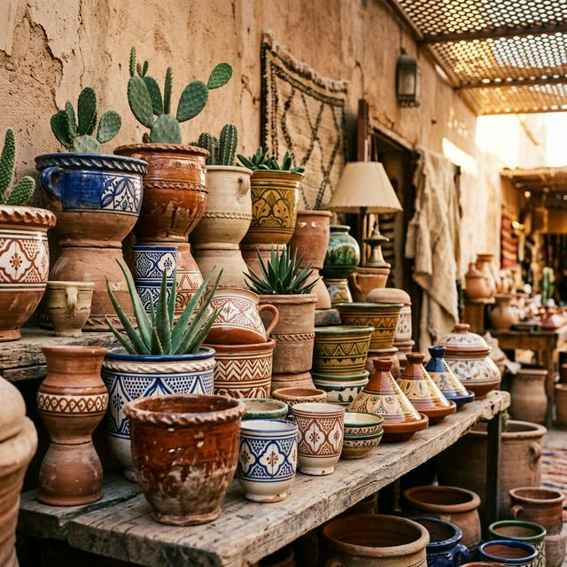
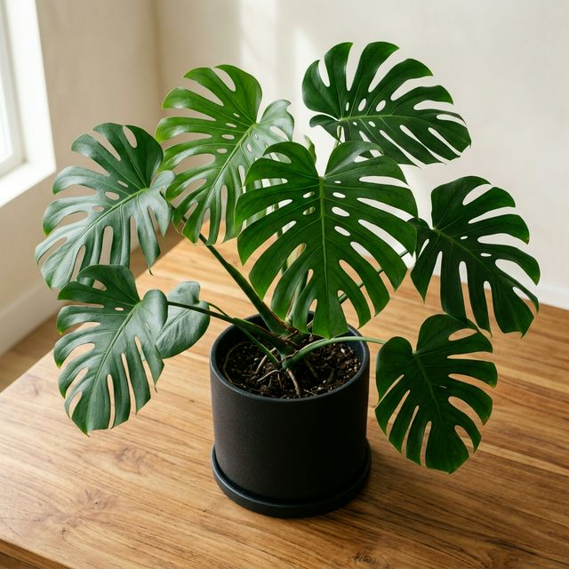

Conseils, inspirations et actualités du monde végétal à Marrakech.

L'architecte paysagiste est chargé d'embellir, de rénover ou de créer des espaces extérieurs, qu'ils soient urbains ou ruraux.
Lire la suite →
Besoin de verdure ? Prenez la route en direction de la vallée de l'Ourika, à seulement quelques dizaines de kilomètres de Marrakech.
Lire la suite →
Découvrez tous nos secrets pour garder vos plantes d'intérieur en pleine santé tout au long de l'année.
Lire la suite →Les systèmes d'irrigation modernes permettent d'économiser jusqu'à 40% d'eau tout en maintenant un jardin florissant.
Lire la suite →
Comment choisir et associer la poterie artisanale marocaine pour sublimer vos compositions végétales.
Lire la suite →
Découvrez quelles plantes tropicales prospèrent particulièrement bien sous le climat de Marrakech.
Lire la suite →